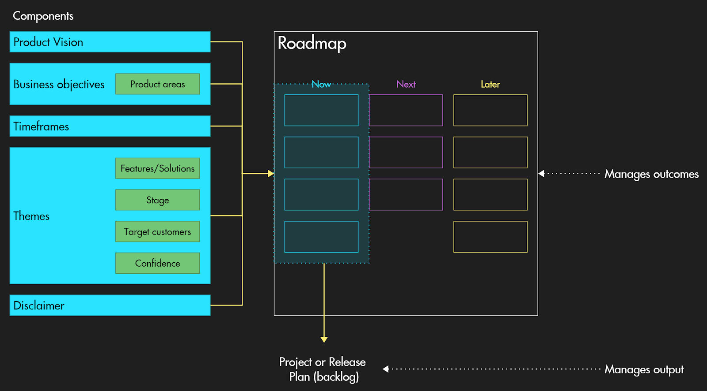

What is a Product Roadmap?
To answer this complex question, we propose a definition extracted from the essential book Product Roadmaps Relaunched (and with which we are totally aligned at Draft): “a Product Roadmap describes how you intend to achieve your product vision. It focuses on the value you propose to deliver to your customer and your organization in order to rally support and coordinate effort among stakeholders.”
As you may have noticed, this definition spotlights the value delivered to customers, i.e., the outcomes in terms of satisfaction of customer needs or answer to customer problems. Whereas solutions could be detailed and estimated in a ‘tactical artifact’ release plan or project plan (like a Gantt Chart can be), a roadmap must remain a ‘strategic artifact’.
The other key element of this definition is product vision. Roadmapping is an ideal moment to take a step back from the day-to-day business and rethink the big picture: Why are we developing this product in the first place? What will it mean to the customer, to the organization, to the planet?
Even if Product Roadmaps can take many forms depending on the organization or the stakeholders it is built for, though this example, we propose an applicable framework that you could reuse and adapt in your context easily.
How to build a Product Roadmap?
Before starting making your roadmap, it is worth spending some valuable time on gathering inputs to make sure you have all the necessary information and context to make the right product decisions and communicate them efficiently. For example, take advantage of this preliminary phase to refresh your understanding of your market and industry, discern who uses your product from who buys clearly, rework your personas, and collect your stakeholders' expectations.
Then, once you are ready to build your roadmap, you can apply Product Roadmaps Relaunched’s framework. It suggests that a compelling Product Roadmap should include at least five primary components:
- Product vision, a component we will focus on in the next part.
- Business objectives, that should enable you to measure progress.
- Timeframes, that must remain broad to avoid over-focusing on dates and diverting attention from the iterative and uncertain process of today's product development.
- Themes, to categorize customer needs or problems that should be satisfied to reach business outcomes.
- Disclaimer, to mention potential caveats and stress, still a bit more, that changes are possible and inherent to roadmapping in an Agile iterative process.
To these firsts components, you could add optional secondary components to bring crucial information to stakeholders. For example, product areas can help categorize business objectives and problems you want to tackle. Some high-level features and solutions, the stage of development, a confidence indicator, and target customers can enrich the themes you’ve showcased.
How to determine a compelling strategic vision
A vision is the lighthouse that helps you navigate when landmarks are lacking. It provides the course and the sense, at all levels of the organization, and for both internal and external stakeholders.
As corporate strategy is highly inspired by military strategy, you will find how interesting and surprisingly relevant for a product vision are the characteristics of strategic vision as defined by Colonel Richard Mackey in his futuristic essay Translating vision into reality: The role of the strategic leader (1992). For the U.S. Army War College professor, the set of characteristics that forms an adequate strategic vision is the following:
- “A mental image (a picture in the mind).
- Clearly communicated, easily understood.
- Generates excitement, appeals to the gut.
- Creates energy and commitment.
- Describe a desirable future state.
- Embedded in some environmental context.
- Establishes/reinforces values of the group.”
Suggested resources to go further with Product Roadmap
- Roman Pichler’s 10 tips for creating an agile product roadmap
- John Cutler’s blog article Beyond “Outcomes over Outputs”
- A presentation from Jason Tanner, CEO at Applied Frameworks, at Scrum Gathering called Product Roadmaps that work